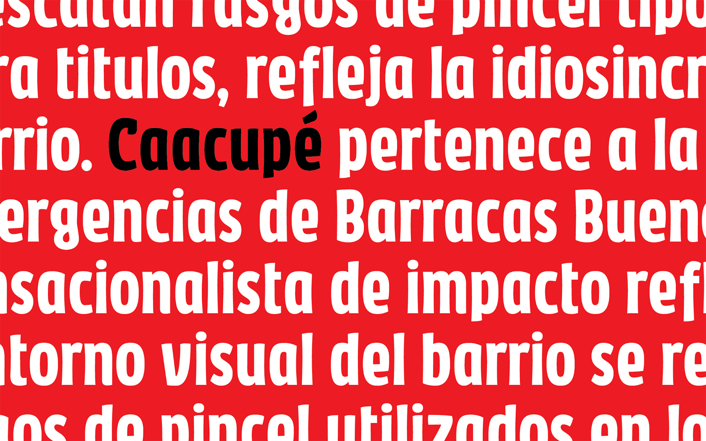

Caacupé is a condensed, heavy display typeface designed for headlines and short text at large sizes, born from fieldwork conducted in Villa de Emergencia 21-24, an informal settlement in Buenos Aires. It translates two visual elements of the neighborhood into type: the hand-painted, brush-lettered signage of local shops and the bold, high-impact graphic language of popular tabloid newspapers. Particular attention was given to the neighborhood's large Paraguayan community and to the Guaraní language, with careful design of the letters and diacritical marks that appear most frequently in Guaraní, alongside broad Latin coverage (full Spanish set, extended Latin, currency symbols, fractions, mathematical signs, and ligatures). Developed in Glyphs, the typeface is currently available in a single style, visually equivalent to a Bold weight.
The project grew out of situated research rather than an abstract design approach: a 2014 study of newspapers circulating in the neighborhood found that existing professional typefaces failed to reflect its visual culture, which is instead shaped by hand-painted lettering and a distinct communicative logic. Caacupé was designed from within that context, treating Guaraní as a first-class citizen of the design rather than an afterthought. It stands as a rare example of a typeface developed through direct research in an informal settlement, now openly available on Google Fonts under the Open Font License.
To contribute, see github.com/googlefonts/caacupe.
